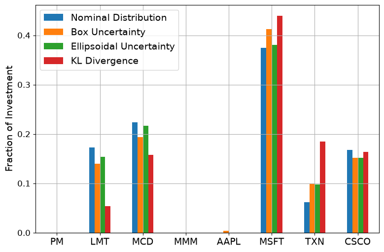

Conditional Value-at-Risk in Robust Portfolio#
Problem and Data Description#
The robust portfolio management model proposed by [ZF09] minimizes the conditional value-at-risk (CVaR) under the worst-case distributions over an uncertainty set \(\Pi\). The formulation is written as
with investment decisions \(\pmb{x}\in\mathbb{R}^n\) and auxiliary variables \(\pmb{u}\in\mathbb{R}^s\) and \(\alpha\in\mathbb{R}\) used for calculating the CVaR, assuming a confidence level of \(\beta=0.90\), where \(n\) is the number of stocks, and \(s\) is the number of sample records. The array \(\pmb{\pi}\in\mathbb{R}^S\) constitutes a vector of random variables representing sample probabilities. The worst-case minimum expected return rate of the portfolio is fixed at \(\mu=0.0025\).
beta = 0.9
mu = 0.0025
The parameter \(\pmb{r}_k\in\mathbb{R}^n\) denotes the stock return rates in the \(k\)th sample record, determined by executing the following code with he weekly price data provided in the file stocks.csv.
import pandas as pd
pd.options.display.precision = 4
data = pd.read_csv('stocks.csv').set_index('Date')
data
| PM | LMT | MCD | MMM | AAPL | MSFT | TXN | CSCO | |
|---|---|---|---|---|---|---|---|---|
| Date | ||||||||
| 2016-03-14 | 64.9492 | 180.0196 | 102.7192 | 126.2342 | 24.2380 | 47.8760 | 46.3563 | 22.2157 |
| 2016-03-21 | 64.5522 | 177.6482 | 102.0652 | 125.5699 | 24.1808 | 48.5205 | 46.0396 | 21.9256 |
| 2016-03-28 | 66.6844 | 181.8123 | 105.1530 | 127.9139 | 25.1694 | 49.7377 | 47.0465 | 22.4981 |
| 2016-04-04 | 67.4398 | 184.4118 | 105.9312 | 127.2268 | 24.8650 | 48.7084 | 47.0059 | 21.7139 |
| 2016-04-11 | 66.9251 | 184.0125 | 105.7822 | 128.8683 | 25.1373 | 49.8093 | 47.8503 | 22.0786 |
| ... | ... | ... | ... | ... | ... | ... | ... | ... |
| 2021-02-15 | 72.9401 | 308.8611 | 198.4512 | 156.0663 | 127.8069 | 234.6678 | 165.2999 | 42.0870 |
| 2021-02-22 | 71.7195 | 304.1006 | 192.7475 | 154.7580 | 119.3337 | 226.8236 | 159.6648 | 41.3407 |
| 2021-03-01 | 73.5462 | 315.8780 | 195.0906 | 159.8323 | 119.4911 | 226.0623 | 155.6516 | 42.6121 |
| 2021-03-08 | 74.8778 | 315.6553 | 199.7663 | 163.4745 | 119.1073 | 230.1131 | 160.8697 | 44.9800 |
| 2021-03-15 | 77.3020 | 332.5984 | 209.7010 | 168.8494 | 118.6152 | 225.2033 | 161.6019 | 44.9615 |
262 rows × 8 columns
r = data.pct_change().dropna().values
s, n = r.shape
r.mean()
0.003879447570185429
Different specifications for the uncertainty set \(\Pi\) of probability distributions are illustrated in the upcoming sections.
Nominal CVaR model#
In the nominal model, the evaluation of CVaR and expected returns assumes that the exact distribution of stock returns is precisely represented by the historical samples, without introducing any distributional ambiguity. In other words, the uncertainty set is defined as \(\Pi={\pmb{\pi}^0}\), where the probability \(pi_k^0=1/s\), with \(k=1, 2, ..., s\). The Python code for implementing the nominal model is provided below.
from rsome import ro
import numpy as np
model = ro.Model()
pi = np.ones(s) / s
x = model.dvar(n)
u = model.dvar(s)
alpha = model.dvar()
model.min(alpha + 1/(1-beta) * (pi@u))
model.st(u >= -r@x - alpha)
model.st(u >= 0)
model.st(pi@r@x >= mu)
model.st(x.sum() == 1, x>= 0, alpha >= 0)
model.solve('copt')
Being solved by COPT 8.0.5...
Solution status: 1
Running time: 0.0075s
After solving the model to optimality, we may retrieve the optimal solution and objective value in terms of the CVaR of returns.
x_nom = x.get()
print(f'Objective value: {model.get()}')
Objective value: 0.04012110816403783
Worst-Case CVaR Model with Box Uncertainty#
Here, we consider a box uncertainty set for probabilities:
where \(\pmb{\pi}^0\) used in the nominal model is the center of the box. In the following numerical study, we assume that \(-\underline{\pmb{\eta}}\leq \pmb{\eta} \leq \overline{\pmb{\eta}} = 0.0005\), and the Python code for solving such a model is shown below.
from rsome import ro
model = ro.Model()
eta_ub = 0.0005 # upper bound of eta
eta_lb = -0.0005 # lower bound of eta
eta = model.rvar(s) # eta as random variables
uset = (eta.sum() == 0,
eta >= eta_lb,
eta <= eta_ub)
pi = 1/s + eta # pi as inexact probabilities
x = model.dvar(n)
u = model.dvar(s)
alpha = model.dvar()
model.minmax(alpha + 1/(1-beta) * (pi@u), uset)
model.st(u >= -r@x - alpha)
model.st(u >= 0)
model.st(pi@r@x >= mu)
model.st(x.sum() == 1, x>= 0, alpha >= 0)
model.solve()
Being solved by the Scipy LP solver...
Solution status: 0
Running time: 0.0558s
x_box = x.get()
print(f'Objective value: {model.get()}')
Objective value: 0.04272614696330346
Worst-Case CVaR Model with Ellipsoidal Uncertainty#
Besides a box uncertainty set, \(\Pi\) can be expressed as an ellipsoid centered at \(\pmb{\pi}^0\):
where the radius coefficient \(\rho=0.002\) in the following numerical studies.
from rsome import ro
import rsome as rso
model = ro.Model()
rho = 0.002
eta = model.rvar(s)
uset = (eta.sum() == 0, 1/s + rho*eta >= 0,
rso.norm(eta) <= 1)
pi = 1/s + rho*eta
x = model.dvar(n)
u = model.dvar(s)
alpha = model.dvar()
model.minmax(alpha + 1/(1-beta) * (pi@u), uset)
model.st(u >= -r@x - alpha)
model.st(u >= 0)
model.st(pi@r@x >= mu)
model.st(x.sum() == 1, x>= 0, alpha >= 0)
model.solve()
Being solved by ECOS 2.0.14...
Solution status: Optimal solution found
Running time: 0.0686s
x_ellip = x.get()
print(f'Objective value: {model.get()}')
Objective value: 0.043398037446185186
Worst-Case CVaR with Kullback-Leibler Divergence#
The distribution ambiguity can also be captured by the Kullback-Leibler divergence metrics, hence we have the following uncertainty set
where the empirical probability \(\pi_k^0=1/s\) as mentioned in the nominal model. Assume that the constant \(\epsilon=0.005\), the code for implementing such a robust model can be written as below.
from rsome import ro
import rsome as rso
model = ro.Model()
epsilon = 0.005
pi = model.rvar(s)
uset = (pi.sum() ==1, pi >= 0,
rso.kldiv(pi, 1/s) <= epsilon)
x = model.dvar(n)
u = model.dvar(s)
alpha = model.dvar()
model.minmax(alpha + 1/(1-beta) * (pi@u), uset)
model.st(u >= -r@x - alpha)
model.st(u >= 0)
model.st(pi@r@x >= mu)
model.st(x.sum() == 1, x>= 0, alpha >= 0)
model.solve()
Being solved by ECOS 2.0.14...
Solution status: Optimal solution found
Running time: 0.2596s
x_kld = x.get()
print(f'Objective value: {model.get()}')
Objective value: 0.05127581660960253
Visualization of Portfolio Decisions#
The following code segment visualizes the optimal solutions of different models in terms of the allocation of investment.
import matplotlib.pyplot as plt
fig, axes = plt.subplots(1, 1, figsize=(9, 6))
results = pd.DataFrame({'Nominal Distribution': x_nom,
'Box Uncertainty': x_box,
'Ellipsoidal Uncertainty': x_ellip,
'KL Divergence': x_kld})
results.plot(kind='bar', ax=axes)
axes.set_xticks(range(n), data.columns, rotation=0)
plt.legend(loc='upper left', fontsize=14)
plt.ylabel('Fraction of Investment', fontsize=14)
plt.xticks(fontsize=14)
plt.yticks(fontsize=12)
plt.grid()
plt.show()

In this case study, the stock return rates for each sample record are deterministically set as \(\pmb{r}_k\), without incorporating any uncertainty. As suggested by [BSS22], these fixed return outcomes can alternatively be modeled as random variables, subject to user-specified supports. This approach will be elucidated using the RSOME dro module for addressing distributionally robust optimization problems.
Reference
Dimitris Bertsimas, Shimrit Shtern, and Bradley Sturt. Two-stage sample robust optimization. Operations Research, 70(1):624–640, 2022.
Shushang Zhu and Masao Fukushima. Worst-case conditional value-at-risk with application to robust portfolio management. Operations research, 57(5):1155–1168, 2009.